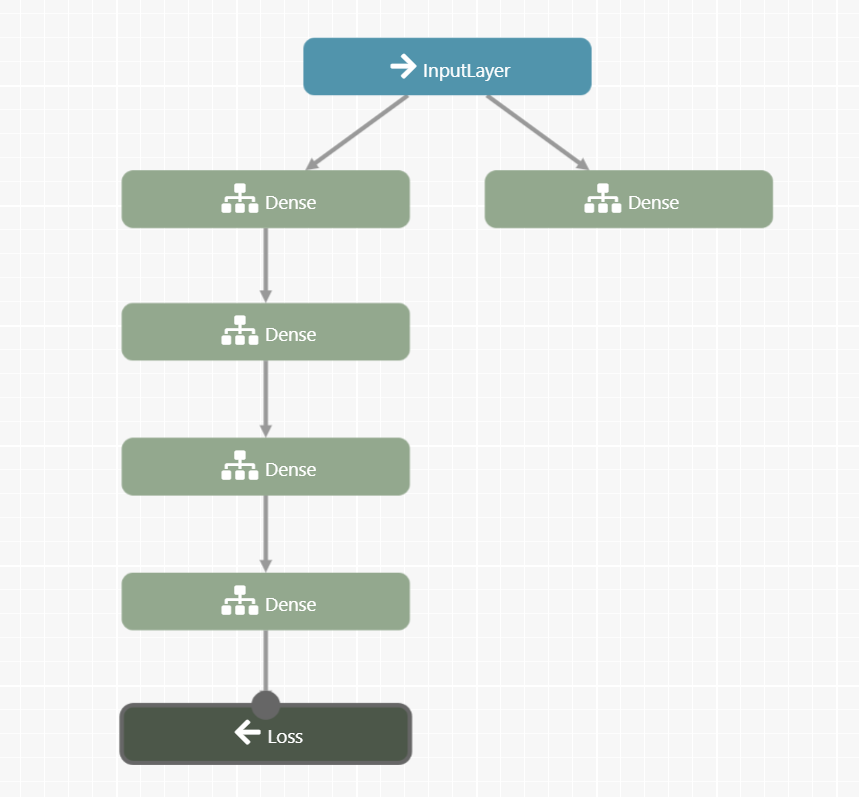

This example does not really do much except prove that you can save the complex model, by loading what it looks like.

So first lets just define a Multi Output Keras model.
and then have let it's json file show up in the text area. This program uses your local storage to save and then upload the
"tensorflowjs_models/myMultiModel01/model_topology" file to the textarea
Normal Keras Sequential Model
model = tf.sequential(); // no const so that it is a global variable
model.add(tf.layers.dense({ units: 20, inputShape: [1] }) );
model.add(tf.layers.dense({ units: 20 }) );
model.add(tf.layers.dense({ units: 1 }) );
This Advanced Keras multiple input single output model
const myInput1Path2Dense1 = tf.layers.dense({units: 1, name: 'myInput1Path2Dense1'}).apply(myInput1);
model2 = tf.model({ inputs: myInput1, outputs: [myInput1Path1Dense4,myInput1Path2Dense1] });
// This would be a global model
Note: Check your developer console --> Application --> Key for the 4 files that may be saved differently on your machine.
On my machine they have the same root as the below localStorage identifier: info model_topology (the one this code loads) weight_data (this is in binary format. Does not load into this textarea) weight_specs